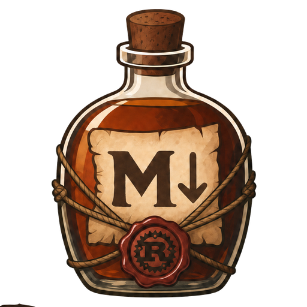
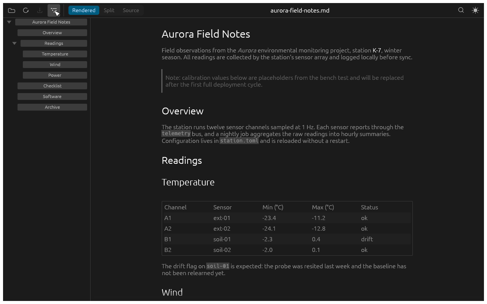
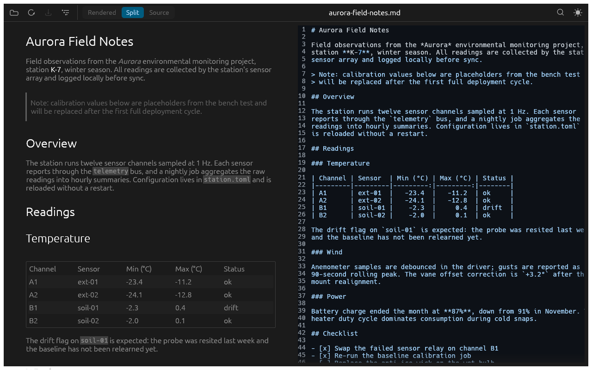
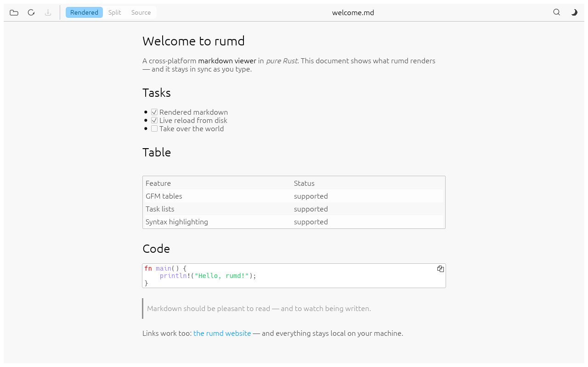
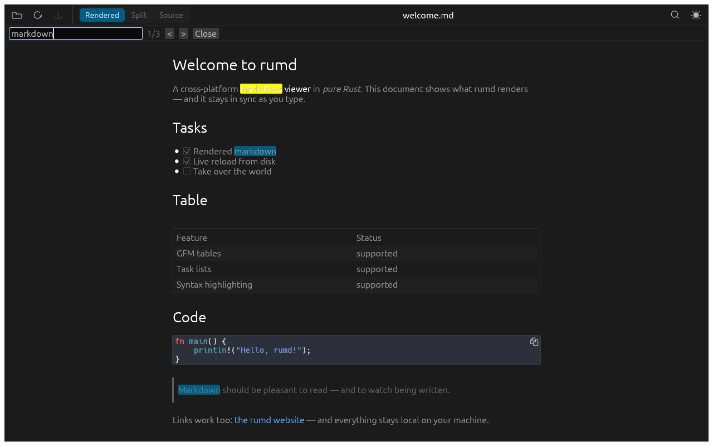

No Electron. Really.
rumd is a single native binary built in pure Rust. No bundled browser, no runtime, none of the gigabytes.

rumdv0.1.2 · Pure Rust · No Electron · 100% local
rumd renders your markdown live — in a clean reading view or side by side with its source — and refreshes automatically when the file changes on disk.
Linux · macOS · Windows — a single native binary

The pitch
rumd is a single native binary built in pure Rust. No bundled browser, no runtime, none of the gigabytes.
A native egui app that starts fast and sips memory while it does its one job well.
No accounts, no telemetry. Your documents never leave your machine.
If the file changes on disk while you have unsaved edits, rumd asks. Reloading never clobbers your work.
Headless UI tests run on every platform without a display server, so quality doesn't depend on someone clicking around.
Drag and drop, the file dialog, or straight from the shell:
rumd README.md
Everything it does
GFM tables, task lists, strikethrough, syntax-highlighted code blocks, clickable links, and local images resolved relative to the document — all in a centered reading column with tuned typography.
Rendered and source side by side. The source pane is always
editable and the rendered pane follows as you type — save with
Ctrl/Cmd+S. Unsaved changes show a • in the
window title.
A collapsible sidebar lists every heading. Expand and collapse groups, click an entry to jump straight to it — and it stays open or closed the way you left it.
Every visible occurrence highlighted in both views at once. Enter and Shift+Enter step through matches.
Follows your system theme by default; toggle any time with Ctrl/Cmd+D.
Zoom in, out, and reset with the usual keys — and it persists.
Theme, zoom, and view mode are restored the next time you open rumd.
Refreshes automatically when the file changes on disk — degrades to manual refresh if the OS watch limit is hit.
Line numbers and markdown highlighting. Files that aren't valid UTF-8 stay read-only, so rumd can never corrupt them.
See it in action



At your fingertips
| Shortcut | Action |
|---|---|
| Ctrl/Cmd+O | Open file |
| Ctrl/Cmd+S | Save edits |
| Ctrl/Cmd+E | Cycle rendered/split/source |
| Ctrl/Cmd+T | Toggle the table of contents |
| Ctrl/Cmd+D | Toggle dark/light theme |
| Ctrl/Cmd+F | Search |
| Enter / Shift+Enter | Next / previous match |
| Esc | Close search |
| Ctrl/Cmd+= / Ctrl/Cmd+- / Ctrl/Cmd+0 | Zoom in / out / reset |
| Ctrl/Cmd+scroll / pinch | Zoom in / out |
| F5 | Reload from disk (asks first if there are unsaved edits) |
Up and running
Prebuilt binaries are attached to every release —
the latest is v0.1.2. Unpack the archive for your
platform and run rumd. No installer, no runtime, nothing to
configure. Every archive ships with a .sha256 checksum.
libxkbcommon, libwayland-client,
libX11) — most desktops already have them.
xattr -cr rumd once, or right-click → Open.
Looking for another version or the checksum files? See the release notes.
Prefer to build it yourself?
rumd builds with a recent stable Rust toolchain (1.95 or newer). macOS and Windows need no extra prerequisites; on Linux install the X11/Wayland development libraries first:
sudo apt install libxkbcommon-dev libwayland-dev libx11-devgit clone https://github.com/dkijkuit/rumd.git
cd rumd
cargo build --releaseThe binary is at target/release/rumd — read a file with
rumd README.md.
Build and install from source as a system-wide Flatpak
(flatpak-builder and the
org.freedesktop.Platform//26.08 runtime, SDK, and
rust-stable extension are required):
flatpak install --system flathub \
org.freedesktop.Platform//26.08 org.freedesktop.Sdk//26.08 \
org.freedesktop.Sdk.Extension.rust-stable//26.08
flatpak-builder --install --system --force-clean build flatpak/io.github.dkijkuit.rumd.yml
flatpak run io.github.dkijkuit.rumd